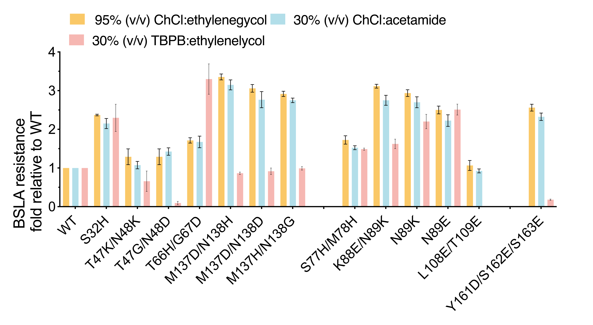
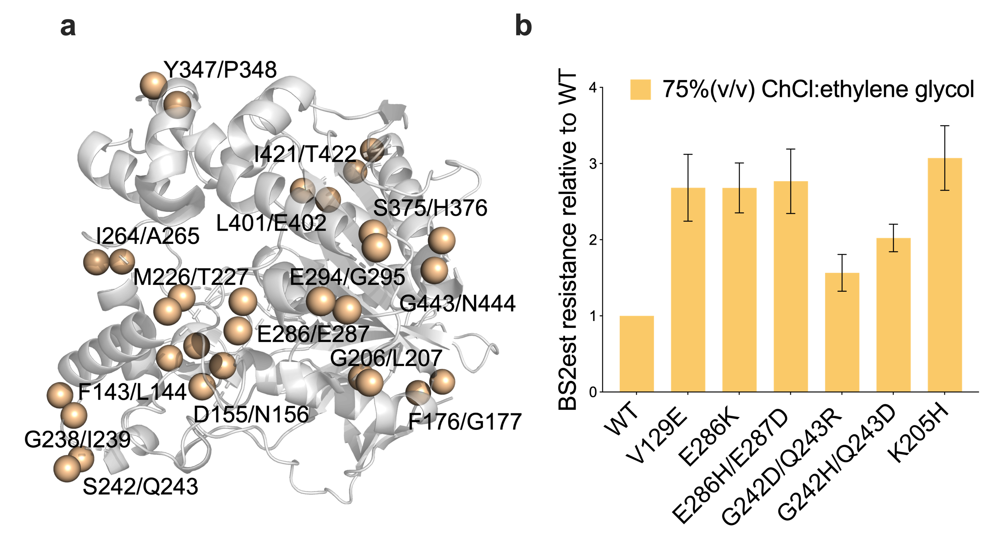
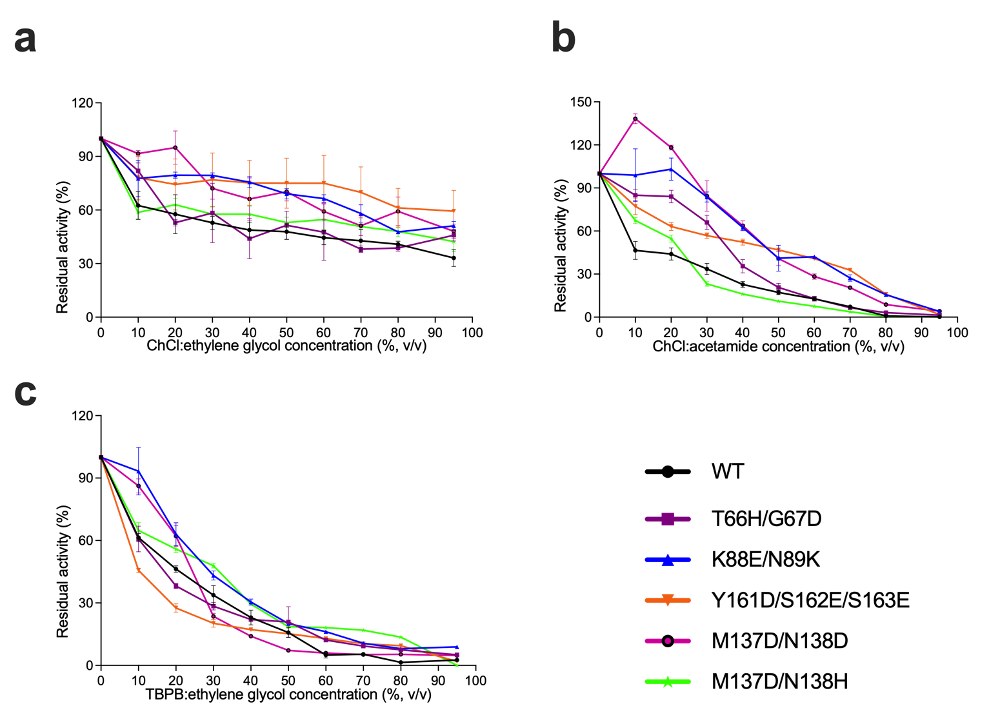
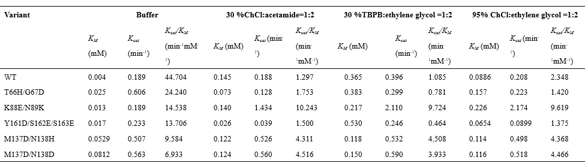
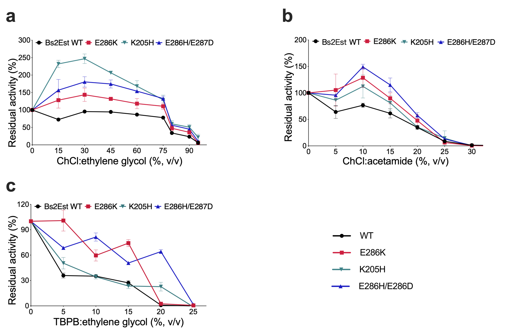

After rescreening, 84, 68, 64 beneficial variants were verified with improved DESs resistance (RV> RWT + 3σ) towards ChCl:ethylene glycol, ChCl:acetamide, and TBPB:ethylene glycol, respectively. Regarding the sequencing on the variants > 1.5-fold improvement towards at least two DESs, thirteen variants were identified and explored in all three DESs. In detail, variant M137D/N138H demonstrated a 3.2-fold increase in resistance in the presence of ChCl:acetamide, and a 3.4-fold increase in resistance in the presence of ChCl:ethylene glycol. N88K/N89E showed significant resistance increase in all three DESs (Figure 1). Additionally, certain variants, including S32H, T47K/N48K, M137/N138H, K88E/N89K, N89E, and Y161D/S162E/S163E, exhibited similar specific activity levels (1 to 1.5-fold) compared to the WT.

Figure 1. BSLA resistance fold relative to WT in three DESs.
Construction of Bs2Est library
To further validate the effectiveness of this directed evolution strategy and improve the efficiency of
directed evolution, the data from the screened BSLA mutants were analyzed. Among the 13 beneficial BSLA
substitutions obtained (> 1.5-fold), more than half (54%, 7/13) were observed at Coil-Helix transition
regions, signifying this region as a favorable location for acquiring enhanced variants. To further
validate this finding, Bs2Est were examined. The protein secondary structures of Bs2Est were obtained
from EMBI-EBI. Taking various factors into consideration, the adjacent amino acids at the Coil-Helix
junction were identified as mutation sites (Figure 2a). Bs2Est libraries were screened in the presence
of 75% (v/v) ChCl:ethylene glycol. After the initial screening of 1848 variants, those demonstrating
improved resistance with a threshold increase of 2.0-fold compared to wild-type Bs2Est were rescreened
with four replicates. Following the second round of screening, six beneficial variants were identified,
with K205H displaying approximately 3.1-fold improved resistance in ChCl:ethylene glycol (Figure2b).

Figure 2. Bs2Est variants in two rounds of screening. (a) The three-dimensional structure of Bs2Est.
The blue spheres represent amino acids at the junction of Coil and Helix, which are also useful
potential sites for mutation. (b) Bs2Est resistance fold relative to WT.
Enzyme Characterization
BSLA
DES resistance profiles of the five BSLA variants (i.e., T66H/G67D, K88E/N89K, M137D/N138D,
M137D/N138H, and Y161D/S162E/S163E) and BSLA WT were investigated at various ChCl:acetamide,
ChCl:ethylene glycol, and TBPB:ethylene concentrations. As shown in Figure 3a-c, most variants
shifted to higher residual activity under the entire range of concentrations of DES compared to WT.
M137D/N138D showed 3.0-fold increased resistance relative to WT in 10% (v/v) ethylene glycol (Figure
3b). K88E/N89K, M137D/N138D, M137D/N138H have more than 40% residual activity at 0-30% (v/v)
TBPB:ethylene glycol (Figure 3c). In addition, kinetic characterization of purified BSLA variants
were studied more closely by investigating the specific activity at 30% (v/v)ChCl:acetamide, 30%
(v/v) TBPB:ethylene glycol, 95% (v/v) ChCl:ethylene glycol (Table 1). All variants had decreased
KM
in 30% ChCl (v/v):acetamide, which indicates that the mutation allowed the enzyme to increase its
affinity for the substrate to some extent. K88E/N89K, M137D/N138H, and M137D/N138D showed
significant increased catalytic efficiency (Kcat/KM) in
the presence of three DESs (K889E/N89K up to
a 10.0-fold increase relative to WT) (Table 1). In summary, through investigating the resistance and
kinetic characterization of the three DESs, we obtained two all-around BSLA recombinants (K88E/N89K,
M137D/N138D) with significantly increased multiple biochemical characteristics (i.e., resistance and
catalytic activity of the three DESs), simultaneously.

Figure 3. DES resistance profiles of the BSLA. (a) Residual activity of BSLA variants in
ChCl:ethylene glycol. (b) Residual activity of BSLA variants in ChCl:acetamide. (c) Residual
activity of BSLA variants in TBPB:ethylene glycol.
Table 1. Kineic characterization of the purified BSLA variants in buffer
and DES.

Bs2Est
According to the information provided, three Bs2Est variants, E286K, E286H/E287D, and K205H, were selected for study due to their superior resistance performance. For all these profiles were shifted to higher residual activities over nearly the entire range of the investigated DESs concentration (Figure 4a-c). These results suggested that the improvements were not limited to one DES employed. The “best” performance of these variants occurred in 30% (v/v) ChCl:ethylene glycol, showing that Bs2Est K205H and E286H/E287D had almost 2.5-fold and 1.9-fold higher DES resistance when compared to BSLA WT, respectively. Notably, K205H showed 3.2-fold improved resistance in 15% TBPB:ethylene glycol.

Figure 4. Characterization of Bs2Est variants in DESs. (a) DES resistance profile of Bs2Est variants
in different concentrations of ChCl:acetamide. (b) DES resistance profile of Bs2Est variants in
different concentrations of ChCl:ethylene glycol. (c) DES resistance profile of Bs2Est variants in
different concentrations of TBPB:ethylene glycol.
Molecular Dynamics Simulation
In order to explore the mechanism of BSLA tolerance to DES, we performed MD simulations to analyze the
possible causes. The simulations involved proteins including WT and five variants (T66H/G67D, K88E/N89K,
M137D/N138H, M137D/N138D and Y161D/S162E/S163E), and contained three DES components: 30% (v/v) ChCl:acetamide,
30% (v/v) TBPB:ethylene glycol and 95% (v/v) ChCl:ethylene glycol. As a result of the overall structural analysis
(Figure 5), a slight increase in the time-averaged RMSD values (Figure 5a) for the last 40 ns of the four BSLA
variants compared to the WT, whereas the change in the internal hydrogen bonding (Figure 5b) is less than 4. In
all simulation systems, the localized regions of RMSF values (Figure 5c) for five BSLA variants displayed varying
degrees of increased (> 1 Å), which indicated that BSLA variants exhibited higher flexibility compared to WT,
thereby affirming the improved stability of BSLA.
Consequently, water and DES molecules in the substrate binding site as well as around substitution sites (Figure 5d and 5e). Interestingly, an increase in the number of water molecules (almost 1-6) in the substrate binding site in all three DES systems (Figure 5d), whereas the number of DES molecules remained almost constant (Figure 5e). It interpreted the experimental observation that the resistance of four variants increased further in 30% (v/v) ChCl:acetamide, 30% (v/v) TBPB:ethylene glycol and 95% (v/v) ChCl:ethylene glycol. This finding corresponded well with the generally recognized perception that water molecules were necessary for enzymes to preserve their catalytic activity and that the degree of enzyme activity generally depended on the content of bound waters. In summary, we discovered that the resistance of BSLA to DESs essentially determined by two factors: (i) localized regions of improved flexibility; and (ii) an increase of water molecules combined in substrate binding site.
Figure 5. Overall and local structural change of BSLA variants in cosolvents. (a) Time-averaged RMSD of backbone and (b) internal Hydrogen bond determined from the last 40 ns of simulations under 30% (v/v) ChCl:acetamide, 30% (v/v) TBPB:ethylene glycol, and 95% (v/v) ChCl:ethylene glycol. Error bars show the standard deviation from three independent MD runs. (c) RMSF of BSLA variants residues in 30% (v/v) ChCl:acetamide, 30% (v/v) TBPB:ethylene glycol, and 95% (v/v) ChCl:ethylene glycol determined from the last 40ns of MD simulations. The data averaged from three independent runs. The dashed line indicates areas of significantly increased flexibility. (d) The number of water molecules was defined as hydration level. The heatmaps indicated the number of increased water molecules in the substrate binding site averaged over the last 40 ns of MD trajectories. (e) The number of DES molecules was defined as hydration level. The heatmaps indicated the number of increased DES molecules in the substrate binding site averaged over the last 40 ns of MD trajectories.